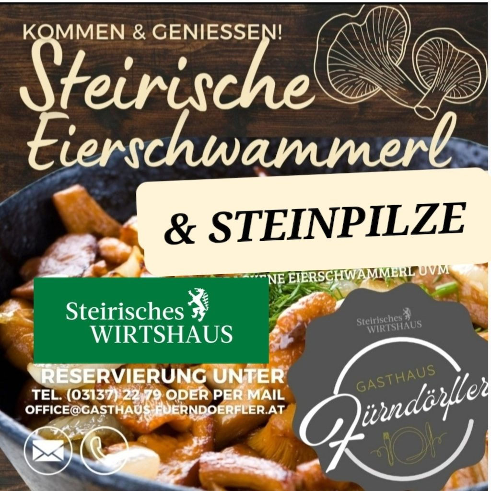

Raum 1
Gaststube
bis 60 Personen
Große Tafeln, Familienfeiern
Feierlichkeiten
Geburtstag, Taufe, Erstkommunion, Firmung oder Firmenfeier: Tafeln bis rund 60 Personen, in vier Räumen, mit Küche aus dem eigenen Haus.
Raum 1
bis 60 Personen
Große Tafeln, Familienfeiern
Raum 2
bis 20 Personen
Kleine Runden, ungestört
Raum 3
bis 30 Personen
Auch als Seminarraum
Raum 4
bis 50 Personen
Warme Jahreszeit, beim Spielplatz
Warum bei uns
Das Gasthaus Fürndörfler wird gerne für Familienfeiern gebucht – kein Wunder bei Räumlichkeiten von 20 bis zu 70 Personen. Die köstliche Küche, die heimelige Atmosphäre, das freundliche Service, die wunderschöne Terrasse und der große Kinderspielplatz machen aus neuen Gästen zukünftige Stammgäste.

Neu: Feier-Anfrage
Wir melden uns mit Raumvorschlag, Menüideen und einem unverbindlichen Angebot zurück.
Gutschein
Ein Abend im Wirtshaus als Geschenk: Der Hausgutschein wird auf den Wunschbetrag ausgestellt und ist für alles im Haus einlösbar.
Als Mitglied von „Steirisches Wirtshaus“ nehmen wir außerdem das Gutscheinheft der Marke an.
Neu: Gutschein bestellen